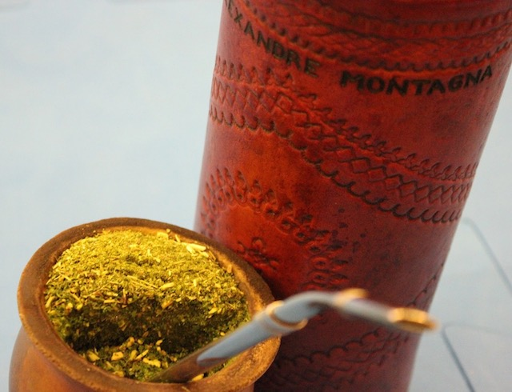
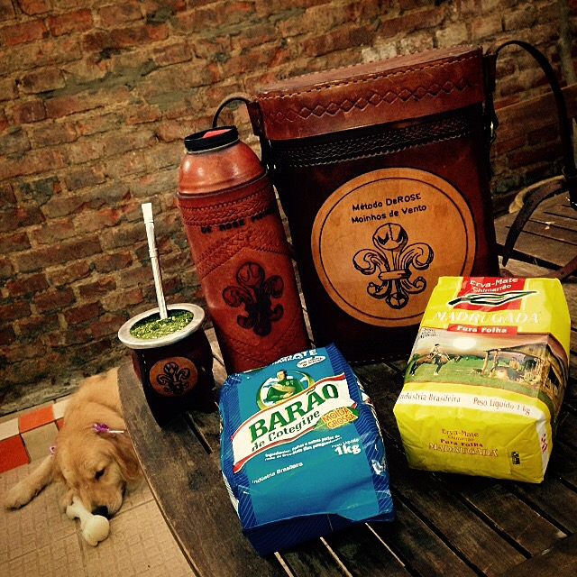

Mate
Il mate (in portoghese, "chimarrão") è l'infusione preparata con le foglie di erba mate (in spagnolo yerba mate; erva-mate in portoghese), una pianta originaria del Sud America. Seguendo lo stesso procedimento del tè, la yerba mate è essiccata, tagliata e sminuzzata. Tradizionalmente questa infusione si beve calda.
Un mate personalizzato.
Sarita beve il mate nel DeRose Festival Florianópolis.
Kit del chimarrão con la pelosa Mel insieme nella foto.